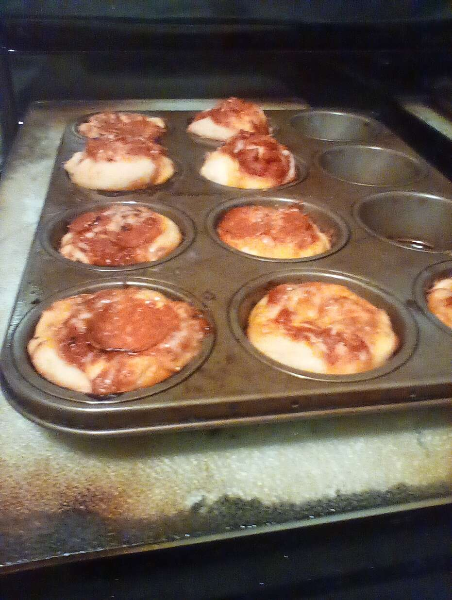

Pizza cakes

Description
Perfectly splendid pizza cakes
Ingredients
- cooking spray
- 8 medium cherry tomatoes
- 1 ounce can refrigerated pizza crust
- 8 teaspoons shredded mozzarella cheese
- a half cup pizza sauce
- 8 teaspoons finely chopped red onion
- a half cup shredded mozzarella cheese
- 8 slices pepperoni, quartered
- italian seasoning to taste
- red pepper flakes to taste
- garlic salt to taste
- preheat the oven to 400 degrees F (200 degrees C).
Spray 8 cups of a muffin tin with cooking spray.
- finely chop cherry tomatoes and any liquid. set aside.
- Unroll pizza crust on floured work surface and roll out thinly into a large rectangle.
Using a 4-inch round cookie or biscuit cutter, cut 8 circles in the dough.
Place dough in circles in the prepared muffin cups, pressing dough into the bottom and up the sides of each cup.
- Drop 1 teaspoon mozzarella into each cup.
Top with 1 tablespoon of pizza sauce.
Add chopped tomatoes and red onions. A
dd 1 tablespoon of mozzarella to each cup,
and top with pepperoni.
Sprinkle each cup with Italian seasoning,
red pepper flakes,
and garlic salt to taste.
- Bake in the preheated oven until cheese is bubbling and melted,
14 to 15 minutes.
Remove from the oven and let it cool in the tin for about 5 minutes.
Remove from the tin and serve hot.